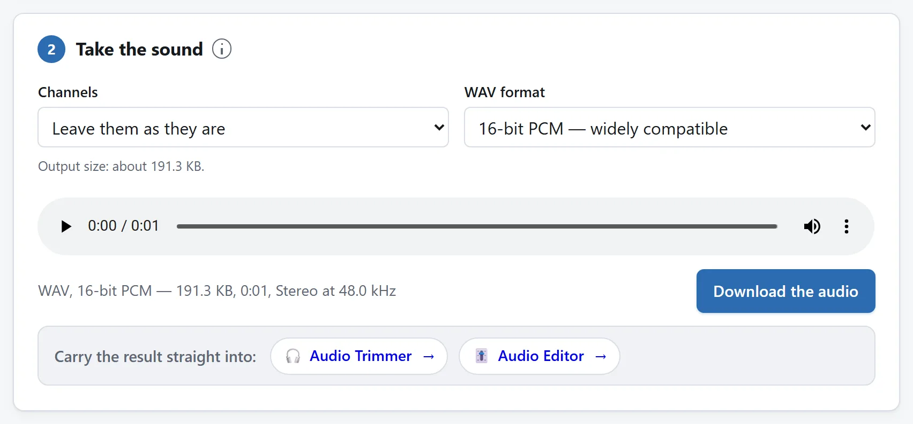

选择视频并试听结果
打开提取工具，选择或拖入视频。浏览器解码音频并自动创建 WAV。下载前请试听结果。无声视频没有可提取的音轨；浏览器无法解码的编码格式需要其他解码器。
转换在你的设备上进行，不会为解码上传文件。大视频仍需内存来容纳输入、解码样本和输出；本地处理并不意味着内存无限。

离屏听讲，或交给音频编辑器
讲座、演示或访谈要离开屏幕听，先保留来源声道和默认 16 位 PCM。试听开头结尾，只需一段再交给音频裁剪。WAV 可能比压缩音轨大很多，传输前确认播放器接受。
旁白或播客编辑选 Float32，声道不变，把 WAV 留作工作副本。提取的是现有混合音轨，不会分离人声和音乐、去噪或转写。试听两个声道再试单声道；语音可能省空间，但两支麦克风可能录不同声音，也可能平均后部分抵消。
选择 16 位或 Float32
16 位 PCM 是默认选项，便于广泛兼容播放。写入时会对解码样本进行取整并限制范围。声道不变时，Float32 保留这些样本值，包括超过满幅的值，适合继续编辑。它不会恢复压缩音轨已丢失的细节。
WAV 保存未压缩音频，因此可能比视频中的压缩音轨大得多。本工具未附带 MP3 编码器，所以不输出 MP3。其他应用的本地编码器可以不上传文件就生成 MP3。
保留声道或混为单声道
保留源声道可保持声道之间的分离。单声道将各声道平均为一个声道，文件可能更小，但会失去立体声定位；声道相位相反时，部分声音还可能抵消。修改此选项后请试听。
源文件头提供采样率时，工具会读取并按该采样率解码。必须假定采样率时，输出信息会说明使用哪个值。若后续应用对时间或采样率有要求，请检查这些信息。
保存、取消或重试
改变位深或声道会自动替换之前的结果。请下载你已试听的版本。取消会废弃当前任务；已开始的浏览器解码可能在内部完成，但迟到的结果不会覆盖更新的选择。写入失败时，请对当前源文件再次使用创建 WAV。